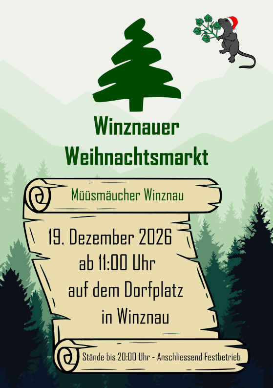
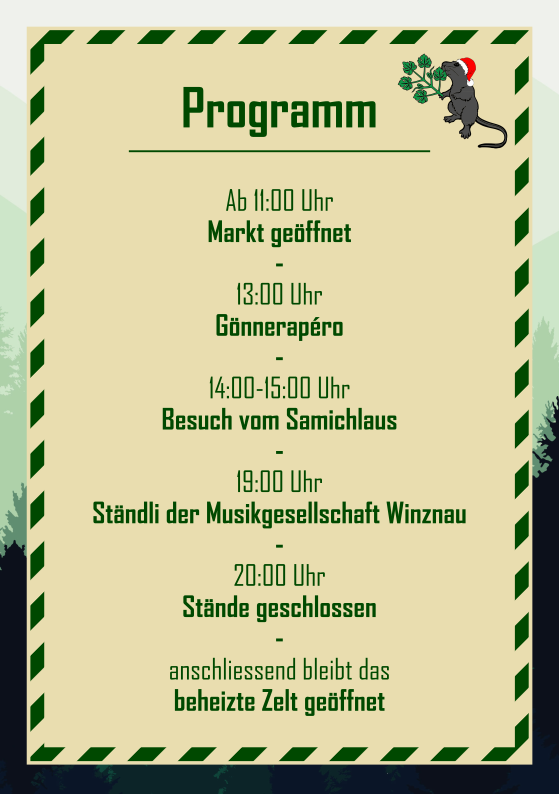
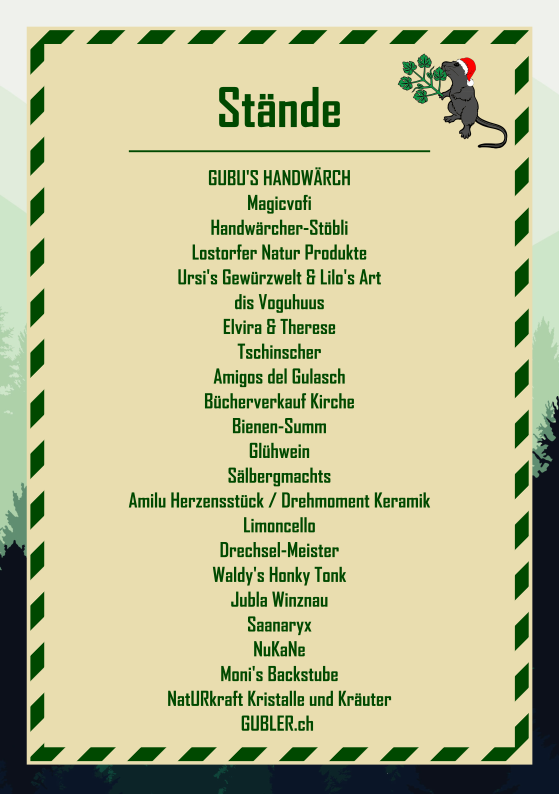
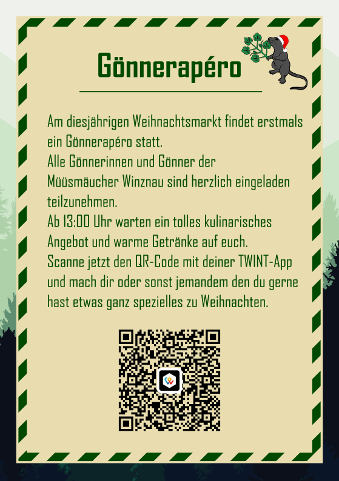

Willkommen
Herzlich willkommen beim Verein Müüsmäucher Winznau. Wir stehen für Gemeinschaft, Tradition und Geselligkeit in Winznau.
Winznauer Weihnachtsmarkt 2026
Samstag, 19. Dezember 2026, ab 11:00 Uhr auf dem Dorfplatz in Winznau. Die Stände sind bis 20:00 Uhr geöffnet, anschliessend Festbetrieb im beheizten Zelt.
- 11:00 Uhr – Markt geöffnet
- 13:00 Uhr – Gönnerapéro
- 14:00–15:00 Uhr – Besuch vom Samichlaus
- 19:00 Uhr – Ständli der Musikgesellschaft Winznau
- 20:00 Uhr – Stände geschlossen, das beheizte Zelt bleibt geöffnet



